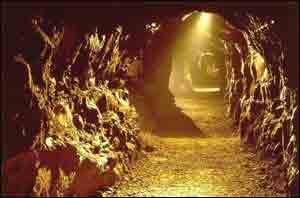
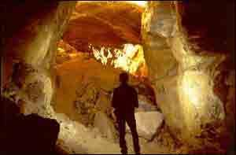

Пещеры "Эайлуии" (Aillwee cove) графство Клэр
Пещеры Эайлуии расположены в северной части графства Клэр, на территории
национального парка Буррин. Чуть южнее селения "Ballyvaughan".
Пещеры были открыты местным пастухом овец в 1940 году. Цепочка подземных залов,
общей протяженностью около одного километра, по возрасту около 2млн. лет.,
обладает прекрасной коллекцией сталагмитов и сталактитов, зрелищной подземной
рекой и водопадом.

